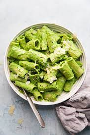

BROCCOLI PESTO PASTA

ABOUT THE RECIPE
Broccoli, pesto, and green olives—believe it! This pasta recipe tastes so fresh. It’s perfectly suited for springtime dinners, though I think you’ll want to keep it in your repertoire for the rest of the year. This broccoli pesto pasta recipe includes green olives as the secret ingredient. They offer a delicious briny olive flavor and cover up the flavor of the broccoli. She says her boys absolutely love this dish, so this dish is designed for the whole family. I found some ricotta in my fridge and really enjoyed a few dollops over my bowl. Serve it as you please!
INGREDIENTS
- 400g penne, farfalle or conchiglie pasta
- 250g broccoli, cut into florets
- 1 garlic clove, peeled
- 1 large lemon
- ½tsp dried chilli flakes
- 3 tbsp pine nuts
- 5 tbsp extra-virgin olive oil
- 3 tbsp parmesan (or vegetarian alternative), grated
STEPS
STEP 1
Tip the pasta into a large pan of boiling salted water and cook according to pack instructions. Meanwhile, bring a smaller pan of salted water to the boil, add the broccoli and boil for 4 minutes.
STEP 2
Drain the broccoli and return it to the pan. Lightly mash the broccoli with a potato masher or fork. Finely grate the garlic and zest the lemon, then mix into the broccoli with the chilli flakes and pine nuts. Cut the lemon in half and keep for later.
STEP 3
Drain the pasta and return it to the pan. Stir in the broccoli pesto and squeeze over the juice of 1⁄2 lemon. Pour in the olive oil and generously season with salt and pepper. Spoon in the grated Parmesan, toss the pasta well and serve.